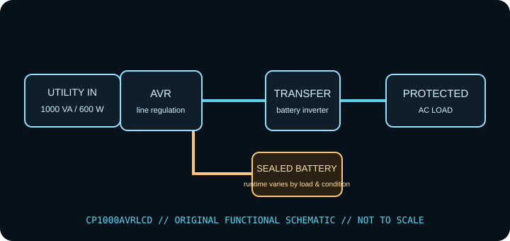

[ LINE-INTERACTIVE UPS // IDENTIFIED MODEL ]
CyberPower CP1000AVRLCD
CyberPower line-interactive AVR UPS, rated 1000 VA / 600 W. This record describes the identified regional model only. Check the complete nameplate, hardware revision and matching manufacturer documentation before installation or load selection.

ARCHIVAL IDENTIFICATION: Record complete SKU/suffix, input/output labels, serial/date code, hardware revision, battery type/age, accessories, test conditions and manual revision. Similar model names do not establish electrical equivalence.
Exact model specifications
| Manufacturer / exact model | CyberPower CP1000AVRLCD (North American model record; verify complete SKU, revision and serial/date label). |
|---|---|
| Topology | Line-interactive UPS with automatic voltage regulation (AVR); supported input fluctuations may be corrected without battery transfer. This is not a standby-only or online double-conversion unit. |
| Capacity / input | 1000 VA / 600 W; 120 V AC, 60 Hz North American version. Confirm the exact model suffix and input label. VA and W are separate limits; stay under both. |
| AC output / waveform | 120 V AC nominal, ±5% listed; simulated sine wave on battery. Line-interactive AVR corrects supported voltage variations without battery transfer. |
| Outlets / load assignment | Nine NEMA 5-15R outlets: five battery-backup + surge-protected and four surge-only. Follow outlet labels on the exact unit. |
| Battery chemistry / service | One 12 V / 9 Ah sealed lead-acid battery (RB1290 class); follow the model manual for replacement and safe isolation. |
| Runtime / test conditions | Manufacturer reference runtime is approximately 6 minutes at half load (300 W) and 1 minute at full rated load (600 W). Actual time depends on battery condition, temperature, charge and load. Runtime tests should record connected watts, charge state, battery age/health, temperature and test date. |
| Host signaling / software | USB and serial data connectivity and PowerPanel Personal management/shutdown software; confirm OS support and software version from CyberPower for the host in use. |
| Load compatibility | 120 V / 60 Hz equipment whose startup/inrush and steady draw fit both VA and watt limits. Simulated sine wave may be incompatible with some active-PFC supplies or sensitive loads; validate manufacturer guidance. |
Safety, service & limits
- Use only with the grounded voltage/frequency and environment allowed by the complete unit label and current model manual. Never defeat grounding or daisy-chain UPS outputs.
- Do not connect heaters, laser printers, motors or other high-inrush loads unless the manufacturer expressly permits them and their steady-state and startup demand remain within the UPS limits.
- Do not open an energized UPS or work on battery terminals. Sealed lead-acid batteries can deliver destructive fault current; avoid short circuits, damaged/swollen/leaking cells and unapproved replacements. Follow the manufacturer isolation, service and recycling directions.
- Remove damaged equipment from service if the case, cord, plug, grounding, outlet, battery or indicator shows heat, swelling, leakage, cracking, odor, corrosion or other fault. Follow the maker’s safe shutdown guidance.
- Keep ventilation clear, protect the unit from liquid and excessive heat, and test host shutdown and runtime under a controlled load. Battery backup is finite and is not a substitute for code-compliant wiring or an independent data backup.
Manufacturer sources and documentation
- CyberPower — CP1000AVRLCD specifications and downloadsManufacturer information for the named model; confirm revision and regional suffix on the actual unit.
- CyberPower — CP1000AVRLCD user manualManufacturer information for the named model; confirm revision and regional suffix on the actual unit.